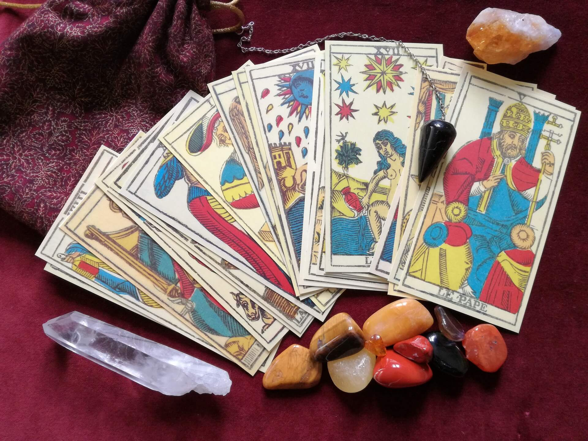
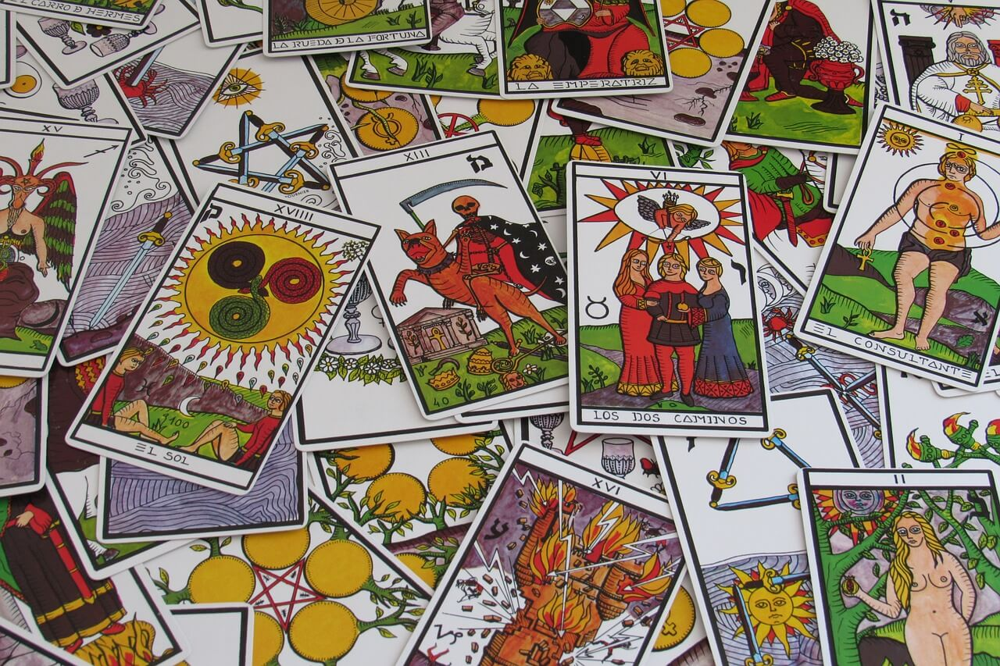

Trusted by thousands of callers nationwide
Phone Tarot Reading — Real Answers, Live 24/7, From $1/Min
Every tarot reader on our line is hand-vetted by our master psychics. Connect in under 60 seconds for an accurate tarot card reading on relationships, career, money, and life decisions. Your first minute is $1 and you can hang up anytime.
- Hand-vetted tarot readers
- Available 24/7
- Hang up anytime
Call and speak with a live master psychic for an accurate tarot card reading about your relationships, career guidance, finance and money, life decisions, and much more. Tarot card readings are helpful especially when you have serious questions about the deepest aspects of your life — and now it has been made easier because tarot readings can already be made via phone.
A tarot telephone psychic reading is for anyone who has specific concerns about their lives that they are looking for answers for. Tarot connects you to more than 500 years of different human experiences by means of the cards.
First-time callers get an introductory rate of $1 per minute, or 15 minutes for $10. Hang up the moment you have your answer.

Who Are Tarot Card Readings For?
A tarot telephone psychic reading is for anyone who has specific concerns about their life that they are looking for answers for. Whether you're at a crossroads in love, weighing a career move, or facing a decision you can't shake, the cards give you focus and perspective — connecting you to centuries of human experience.
How a Tarot Card Reading Works
For phone tarot card readings, the cards are shuffled and dealt in a specific arrangement that is called the "Tarot arrangement." The spread offers insight into your past, present, and future. Your reader interprets each card in the position it falls to answer what you came to ask.

The Major Arcana
Typically a tarot deck has 78 cards, of which 22 are classified as the "Major Arcana." These cards represent significant life events and turning points — the bigger themes with long-term effects on your journey. When Major Arcana cards appear in your reading, they point to the major forces shaping your path. See the full Major Arcana tarot card meanings — every card from The Fool to The World, with upright, reversed, and advice.
The Minor Arcana
After the 22 Major Arcana, the remaining 56 cards are the Minor Arcana — they address the details of daily life. The Minor Arcana is divided into four suits, each with 14 cards (including the court cards). See the full Minor Arcana tarot card meanings — every card in every suit:
Types of Tarot Card Readings
Different spreads answer different questions. Tell our team what's on your mind and we'll match you with the right reader and spread:
Three Card Spread
One of the most powerful tarot spreads in the easiest and fastest way — clarity on past, present, and future.
True Love Spread
A love tarot reading that evaluates your connection physically, emotionally, mentally, and spiritually.
Success Spread
Addresses the obstacles in your way and the solutions to move past them.
Celtic Cross Spread
Used for complicated situations — a full, detailed picture of your circumstances and influences.
Spiritual Guidance Spread
For spiritual growth concerns — direction on your path, purpose, and inner development.
Career Path Spread
For career dissatisfaction — clarity on jobs, timing, and professional decisions.
Not Sure Which Spread You Need? You Don't Have To Know.
Tell our team what's weighing on you and we'll connect you with the right hand-vetted tarot reader in under 60 seconds. First minute $1 · 15 minutes for $10 · hang up anytime · 100% satisfaction promise.
Call (888) 920-6662 NowWhat Callers Say About Their Tarot Reading
"I really don't believe in this kind of stuff. I was in a huge mess facing a big decision and tried a session even though I thought it wouldn't work. After the session I was in great surprise — everything she said was relevant. She gave me real points and changed my perspective on tarot."
"I book a session twice a year to look at my business landscape and ask specific questions. The tarot reading has given me so much information I was able to use — practical nuggets of wisdom I carefully write down every time."
"After a tarot reading session, I walked away speechless and full of awe. I still can't believe how she can give such accurate points in a consistent manner. It's definitely mind blowing!"
Phone Tarot Reading — Frequently Asked Questions
How does a phone tarot reading work?
Your reader shuffles and lays the cards in a spread while connecting with your energy through your voice, then interprets the cards in the positions they fall. No need to be in the same room — the connection is through energy, not sight.
Is a phone tarot reading accurate?
A skilled, experienced reader can be remarkably accurate, though concentration, intention, and timing of the draw all play a part. Tarot shows the energies and likely direction around your question — guidance to help you decide, not a fixed fate.
What questions can I ask in a tarot reading?
Anything that matters to you — relationships, career guidance, finance and money, life decisions. Open-ended questions get the most useful insight.
What is the difference between the Major and Minor Arcana?
A deck has 78 cards. The 22 Major Arcana represent major life themes and turning points; the 56 Minor Arcana cover the day-to-day influences around your question.
Which tarot spread should I choose?
It depends on your question — Three Card for quick clarity, True Love for relationships, Career Path for work, Celtic Cross for a deep picture. Our team will match you with the right reader and spread.
How much does a phone tarot reading cost?
First-time callers pay $1 per minute, or 15 minutes for $10. Returning callers pay their chosen reader's per-minute rate, and you can hang up anytime.
A phone tarot card reading works much like any psychic reading — the connection happens through your voice and energy, so distance is never a barrier.
Get Your Tarot Reading Now
Here's what happens when you call: you're connected to a hand-vetted tarot reader in under 60 seconds, you ask anything about love, career, or money, and you hang up the moment you have your answer.
- Hand-vetted tarot reader
- Connected in under 60 seconds
- $1/min first call · 15 min for $10
- Hang up anytime
- 100% satisfaction promise